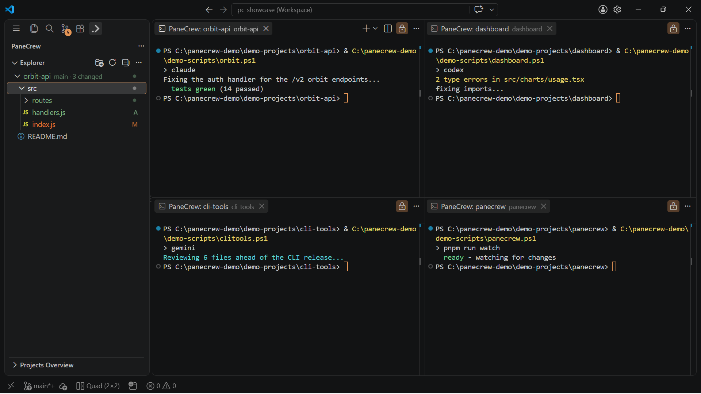
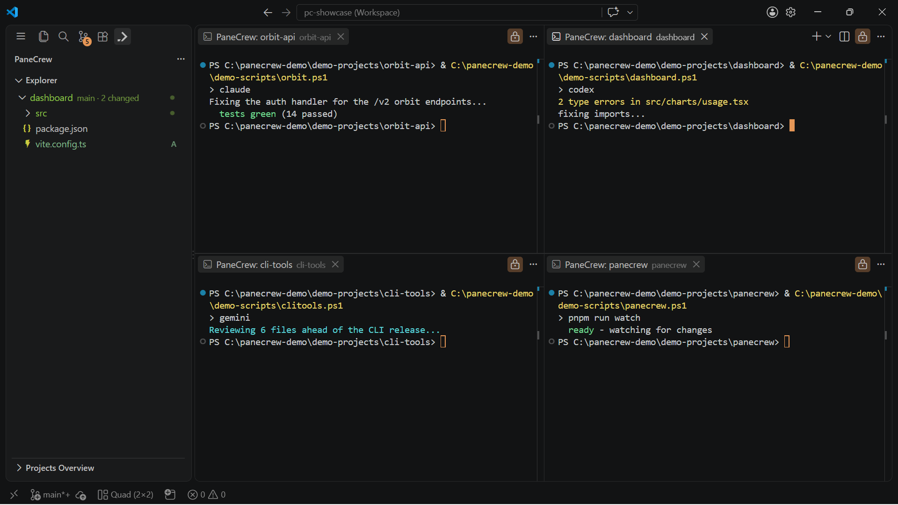

PaneCrew
Terminals, in formation.

PaneCrew
Every
project.
Its
own
live
terminal.

Focus-following explorer
The explorer follows you.
No manual switching between projects.

Git at a glance
Know what's dirty — instantly.
PaneCrew
Terminals, in formation.